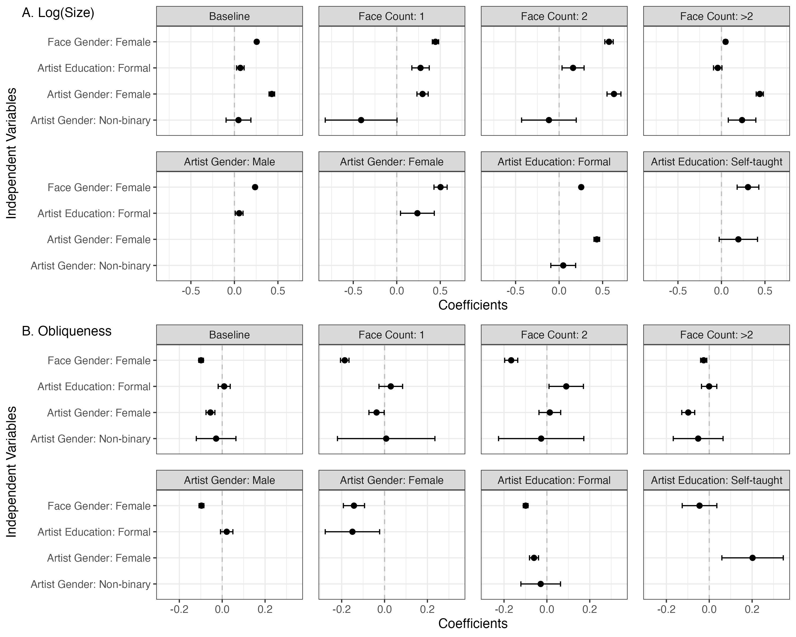

Every Portrait Tells a Story
Tracing Gender Disparities in Paintings, 1400–2024
![]()
May 5, 2025


Roadmap
RQ: How are genders depicted in paintings through the history?
Theoretical Background
Data & Methods
Results: Tracing Gender Disparities in Paintings
Discussion & Conclusion
Theoretical Background
Cultures Reinforce Inequality
Sociological theories long argued the cultural inequality
Feminist art historical studies observed gender inequality in cultures
Findings in Computational Text Analyses
Yet, Results in Visual Materials are Controversial…
Distinguishing Two Dimensions of Cultural Inequality
The major gap between the two papers is how they approach “inequality”.
| Frequency-based Inequality | Feature-based Inequality | |
|---|---|---|
| Text | Word Counts | Word Embeddings |
| Image | Figure Counts | Figure Features |
| (Adukia et al. 2023) | (Guilbeault et al. 2024) |
By analyzing both dimensions upon painting, a visual culture format with deliberation (Berger 1972) and long history (Aubert et al. 2014) visual art format, this research would like to systematically examine the gender inequality in visual cultures.
Hypotheses: Gender Disparity in Paintings
H1: Female characters appear less frequently in paintings than male.
- Two Conflicted Theories
- From advertisements (Goffman 1979): Female figures are more tiny, avoidant to the camera sights, and leaning, than male figures, similar to the idea of “the second sex” (Beauvoir 1949).
- From movies (Mulvey 1975): Female figures are more objectified, thus more large and frontal towards the audience, than male figures, as so-called “male gaze”.
Hypotheses: Gender Disparity in Paintings
H1: Female characters appear less frequently in paintings than male.
H2: Sizes of different genders in paintings are different.
H2.A: Female characters in the paintings are larger than male characters in sizes.
H2.B: Female characters in the paintings are smaller than male characters in sizes.H3: Postures of different genders in paintings are different.
H2.A: Female characters in the paintings are more oblique than male characters.
H2.B: Female characters in the paintings are more frontal than male characters.H4: Marginalized artists will depict female and male characters in a more equal manner, compared to the artists from dominant groups.
Data & Methods
WikiArt.org Dataset
Artwork Information: Face Detection
Artist Information: LLM Extraction
Regressions: Fixed Effect on Face Counts
- Baseline Model:
\[ \begin{aligned} Y_{ij} = \beta_0 + \beta_1\, \text{FaceGender}_{ij} + \beta_2\, \text{ArtistInfo}_{j} + \sum_{t=1}^{T}\beta_t\, \text{Period}_{ij} + \sum_{k=1}^{K} \gamma_k\, D_{k,j} + \epsilon_{ij} \end{aligned} \]
- Period-interacted Model:
\[ \begin{aligned} Y_{ij} =\; & \beta_0 + \beta_1'\, \text{FaceGender}_{ij} + \beta_2'\, \text{ArtistInfo}_{j} + \sum_{t=1}^{T}\beta_t'\, \text{Period}_{ij} \notag \\ & + \sum_{t=1}^{T}\beta_{t1}'\, \text{Period}_{ij} \times \text{FaceGender}_{ij} + \sum_{k=1}^{K} \gamma_k'\, D_{k,j}' + \epsilon_{ij}' \label{eq:inter1} \end{aligned} \]
Results
Frequency-based Gender Disparities

Feature-based Gender Disparities: Baseline

Female faces are persistently larger and frontal than male faces in all models.
Marginalized artists hardly bridge the gender gap, while self-taught artists do depict females more equally in obliqueness.
Feature-based Gender Disparities: Trend

Feature-based Gender Disparities: Trend

Feature-based Gender Disparities: Content Analysis

Discussion & Conclusion
Summary of Results
Theoretical Implications
Methodological Implications
Limitations
Q&A
Thanks for listening!